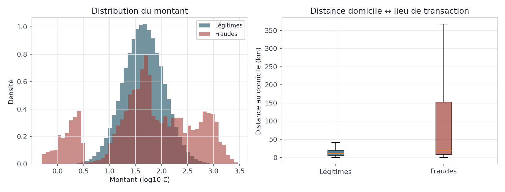

Ce que révèlent 400 000 transactions labellisées avant tout entraînement de modèle : l'ampleur du déséquilibre de classes, le profil statistique des fraudeurs, et les limites d'une détection fondée sur une seule variable à la fois.
Le bloc BC02 est la première lecture analytique du socle construit au BC01. Avant d'entraîner un quelconque modèle, il faut répondre à quatre questions qui conditionnent toutes les décisions techniques des blocs suivants : quelle est l'ampleur réelle du déséquilibre entre transactions légitimes et frauduleuses, quelles caractéristiques distinguent statistiquement un fraudeur d'un client normal, comment se comportent les variables numériques clés (montant, distance), et jusqu'où une méthode simple — regarder une seule variable à la fois — permet-elle déjà de détecter la fraude. Cette dernière question n'est pas accessoire : elle établit une base de comparaison objective (une baseline) qui permettra, au BC03, de mesurer l'apport réel d'un modèle supervisé multivarié plutôt que de le supposer.
L'ensemble de l'analyse porte sur les 400 000 transactions issues de la voie batch
du socle BC01, à l'exclusion des transactions ingérées par le flux Kafka de démonstration : ces
dernières ne portent pas encore de statut de fraude connu (is_fraud IS NULL), par
construction du pipeline décrit au BC01. Mélanger les deux aurait faussé chaque taux calculé ici.
Le choix de structurer l'analyse en quatre temps — déséquilibre, profiling, statistiques descriptives, anomalies univariées — suit une logique de complexité croissante délibérée. On commence par mesurer l'ampleur du problème (le déséquilibre), condition nécessaire pour interpréter correctement tout ce qui suit : un taux de détection de 95 % semble excellent dans l'absolu, mais devient trivial à atteindre dès lors que 98,5 % des transactions sont légitimes. On caractérise ensuite qui sont les fraudeurs dans les données (profiling), en calculant un taux de fraude conditionnel pour chaque dimension métier disponible plutôt qu'un simple coefficient de corrélation : un taux de fraude par canal ou par heure se lit et se présente directement à un public non technique (compliance, direction des risques), quand un coefficient statistique demande une traduction. On formalise ensuite ce constat visuel par des statistiques descriptives comparant explicitement les deux populations, avant de tester, en dernier lieu, si une règle fondée sur une seule variable suffirait déjà à détecter la fraude — ce qui revient à évaluer la valeur ajoutée réelle qu'un modèle multivarié devra apporter au BC03 pour se justifier.
Pour cette dernière étape, deux méthodes univariées ont été appliquées sur le montant, et délibérément confrontées : le z-score, qui signale une transaction dès que son montant s'écarte de plus de trois écarts-types de la moyenne, et l'écart interquartile (IQR), qui signale tout ce qui dépasse le troisième quartile de plus d'une fois et demie l'écart interquartile. Ces deux règles reposent sur une hypothèse implicite différente : le z-score suppose une distribution proche de la normale, l'IQR est conçu pour rester robuste face à une distribution asymétrique. Or le montant d'une transaction bancaire suit typiquement une loi log-normale, fortement asymétrique à droite — ce que les résultats de la section 5 confirment directement. Confronter les deux méthodes sur la même variable permet donc de mesurer très concrètement le coût d'une hypothèse de normalité mal choisie, plutôt que de l'affirmer en théorie.
Sur les 400 000 transactions analysées, 6 000 sont frauduleuses, soit un taux de 1,50 % — une fraude pour 66 transactions légitimes. Ce chiffre se situe dans la fourchette réaliste de 0,3 % à 2 % évoquée par la littérature pour la fraude carte, et confirme que la génération synthétique du BC01 respecte bien la contrainte de déséquilibre extrême qui justifie, à elle seule, l'essentiel des choix méthodologiques du BC03 (SMOTE, pondération de classes, métriques adaptées au lieu de la simple exactitude).
Le taux de fraude n'est pas uniforme : il varie fortement selon le canal, l'heure, la méthode
d'authentification et la géographie de la transaction — c'est précisément ce que doit révéler un
profiling. Le canal en ligne concentre le taux de fraude le plus élevé
(2,43 %, contre 0,24 % pour un retrait au distributeur), et l'absence d'authentification
(none) porte un taux de 5,56 %, contre 0,76 % pour une transaction validée par code
PIN. Le résultat le plus frappant concerne l'heure : le taux de fraude culmine à
33,05 % à 4 h du matin — une transaction sur trois à cette heure est frauduleuse,
contre moins de 1 % en journée. Cette concentration nocturne recoupe directement trois des six
typologies de fraude injectées au BC01 (fraude_en_ligne, skimming,
vol_carte_physique), qui forcent statistiquement une fenêtre horaire 0h-6h.

usurpation_identite, ingenierie_sociale)
se voient attribuer un pays étranger, et aucune transaction légitime simulée n'en porte un. Un
jeu de données réel présenterait un recouvrement partiel (voyages, achats transfrontaliers
légitimes), pas une séparation parfaite. Ce résultat valide la cohérence interne du générateur
plutôt qu'il ne constitue une règle de détection transposable telle quelle.
Le montant moyen d'une transaction frauduleuse (230,26 €) est plus de trois fois supérieur à
celui d'une transaction légitime (67,54 €), mais cet écart de moyenne masque une réalité plus
riche : la distribution du montant frauduleux est bimodale, avec une concentration
de très petits montants (quelques euros, signature de la typologie test_carte, qui
vérifie la validité d'une carte volée avant un usage frauduleux plus important) et une seconde
concentration de montants élevés (plusieurs centaines d'euros, signatures
fraude_en_ligne et ingenierie_sociale). La distribution légitime, elle,
reste unimodale et régulière — c'est la signature classique d'une loi log-normale simple. Le même
contraste se retrouve sur la distance au domicile : 13,65 km en moyenne pour une transaction
légitime contre 173,95 km pour une fraude, avec une dispersion (écart-type) plus de trente fois
supérieure côté fraude.

| Variable | Population | Moyenne | Médiane | Écart-type |
|---|---|---|---|---|
| Montant (€) | Légitime | 67,54 | 45,07 | 75,16 |
| Fraude | 230,26 | 52,41 | 382,42 | |
| Distance domicile (km) | Légitime | 13,65 | 11,64 | 10,17 |
| Fraude | 173,95 | 19,64 | 336,27 |
Appliqué au seul montant, un détecteur par z-score (seuil de 3 écarts-types) signale 6 034 transactions, dont 1 260 sont réellement frauduleuses : une précision de 20,9 % et un rappel de 21,0 % — quatre alertes sur cinq sont de fausses alertes, et moins d'une fraude sur cinq est détectée. La méthode IQR, plus permissive, signale près de cinq fois plus de transactions (28 924) et détecte un peu plus de fraudes en valeur absolue (1 790), mais au prix d'une précision qui chute à 6,2 % : elle confirme, comme anticipé en section 2, qu'une règle conçue pour une distribution symétrique se dégrade fortement face à l'asymétrie réelle du montant, ici en générant une masse de faux positifs plutôt qu'en manquant les vraies fraudes.
Le plafond de rappel observé — jamais au-delà de 30 %, quelle que soit la méthode — n'est pas un
défaut de calibrage du seuil : il est structurel. Sur les six typologies de fraude injectées au
BC01, seules deux (fraude_en_ligne, ingenierie_sociale) se distinguent
par un montant significativement supérieur à la normale, et une troisième
(test_carte) par un montant anormalement bas. Les trois typologies restantes
(usurpation_identite, skimming, vol_carte_physique) ne
portent aucune signature sur le montant : elles se manifestent par la distance, l'heure ou
l'authentification. Aucune règle fondée sur le montant seul ne peut donc, par construction,
détecter plus de la moitié des typologies de fraude — quel que soit le seuil choisi.

| Détecteur | Signalées | Vrais positifs | Précision | Rappel | F1 |
|---|---|---|---|---|---|
| Z-score (seuil = 3) | 6 034 | 1 260 | 20,9 % | 21,0 % | 0,209 |
| IQR (Q3 + 1,5×IQR) | 28 924 | 1 790 | 6,2 % | 29,8 % | 0,103 |
Trois enseignements se dégagent de ce bloc et engagent directement les choix du BC03. D'abord, le déséquilibre mesuré (1,50 %, soit 1 pour 66) confirme la nécessité d'une stratégie de rééquilibrage explicite (SMOTE ou pondération de classe) et interdit d'utiliser l'exactitude brute comme métrique d'évaluation — un modèle qui prédirait systématiquement « légitime » atteindrait déjà 98,5 % d'exactitude sans détecter une seule fraude. Ensuite, le profiling identifie un jeu de variables clairement porteuses de signal — canal, heure, authentification, distance au domicile — qui constitueront naturellement les features les plus importantes d'un modèle supervisé, avec la réserve méthodologique déjà posée sur la variable géographique. Enfin, et surtout, la détection univariée plafonne à un rappel de 30 % parce que la fraude simulée est multi-signature : c'est cette limite structurelle, mesurée précisément ici plutôt que supposée, qui justifie objectivement le passage à des modèles multivariés (Logistic Regression, Gradient Boosting) capables de combiner simultanément plusieurs variables faibles en un signal fort — l'objet même du BC03.